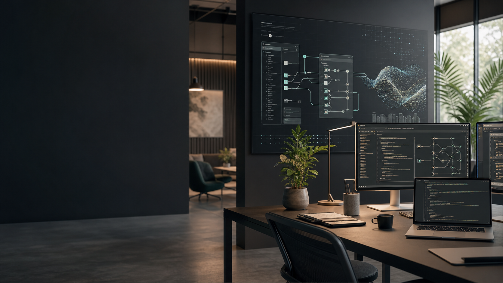

Agentes inteligentes
Asistentes especializados para atención, soporte interno, ventas y flujos operativos.

Ingeniería de software + inteligencia artificial
Diseñamos, desarrollamos e integramos soluciones de IA confiables: desde asistentes internos hasta plataformas de automatización, analítica y operación a escala.
Tecnología aplicable
Nuestro equipo combina arquitectura cloud, desarrollo full-stack, datos y modelos de lenguaje para crear productos que se integran con sistemas existentes y entregan valor medible desde las primeras semanas.
Servicios
Asistentes especializados para atención, soporte interno, ventas y flujos operativos.
Conectamos modelos con CRM, ERP, bases de datos, documentos y herramientas existentes.
Dashboards, predicción, clasificación, extracción documental y monitoreo de indicadores.
Aplicaciones web y móviles con experiencias claras, rápidas y listas para crecer.
Proceso
Mapeamos procesos, datos disponibles, riesgos y oportunidades de automatización.
Validamos una solución pequeña, medible y conectada al flujo real del equipo.
Construimos la arquitectura, la interfaz, las integraciones y los controles de seguridad.
Medimos resultados, ajustamos prompts, automatizaciones y nuevas capacidades.
Casos de uso
Extracción de datos desde contratos, facturas, reportes y formularios.
Respuestas con contexto, búsqueda semántica y escalamiento ordenado.
Priorización de oportunidades, resumen de cuentas y alertas accionables.
Hablemos
Cuéntanos qué proceso quieres optimizar y te proponemos una ruta técnica, realista y sin ruido.